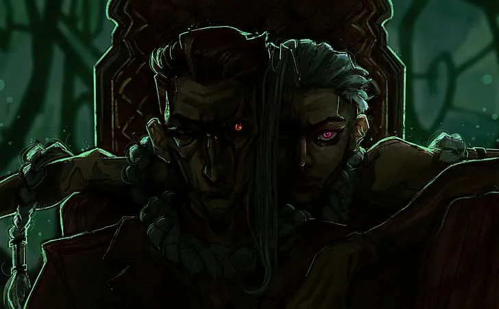

pick a time
(yes, lunch at dinnertime. don't question it)
what are we eating?
perfect, we'll pick you up on 22 march 2027 💜
time
food
see you soon sunshine

(yes, lunch at dinnertime. don't question it)
see you soon sunshine